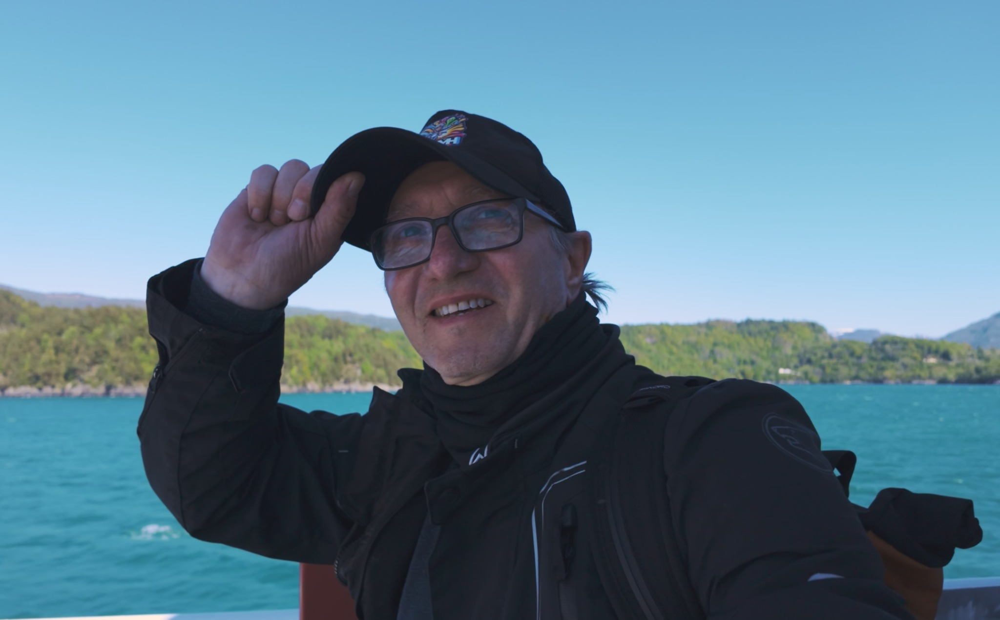

À PROPOS DE LCDMH
La Chaîne Du Motard Heureux – Road trips, tests et aventures à moto depuis 2022

Yves
65 ans, passionné de moto et de voyages. À 16 ans, j'avais une 125… puis la vie a fait que la moto s'est arrêtée. C'est à 61 ans, en février 2022, que j'ai passé mon permis et que je suis reparti à l'assaut des routes.
Depuis, j'ai parcouru plus de 72 000 km à travers l'Europe : Cap Nord, Turquie, Espagne, Alpes… Seul, toujours avec la même envie : rouler, découvrir et partager. J'adore la découverte, et j'adorerais parcourir un jour les plus belles routes du monde entier.
Sur cette chaîne, vous trouverez des récits de voyage authentiques, des tests de motos et d'équipements en conditions réelles, et des conseils pour préparer vos propres aventures. Ici, pas de mise en scène : juste la route, la machine, et l'instant présent.
MES MOTOS
Celles qui m'ont accompagné
Tour d'Espagne, Alpes
Europe–Asie, Turquie, Balkans
Cap Nord, Alpes, France
MES VALEURS
Ce qui guide LCDMH
MON SETUP VIDÉO
Ce que j'utilise pour filmer mes aventures
POURQUOI "LA CHAÎNE DU MOTARD HEUREUX" ?
Parce que rouler à moto, c'est avant tout du bonheur. Celui de la route, des paysages, des rencontres. Celui des galères aussi, qu'on finit par raconter en riant. LCDMH, c'est cette envie simple de partager des moments vrais, sans filtre, sans artifice. Juste un motard heureux sur sa moto.